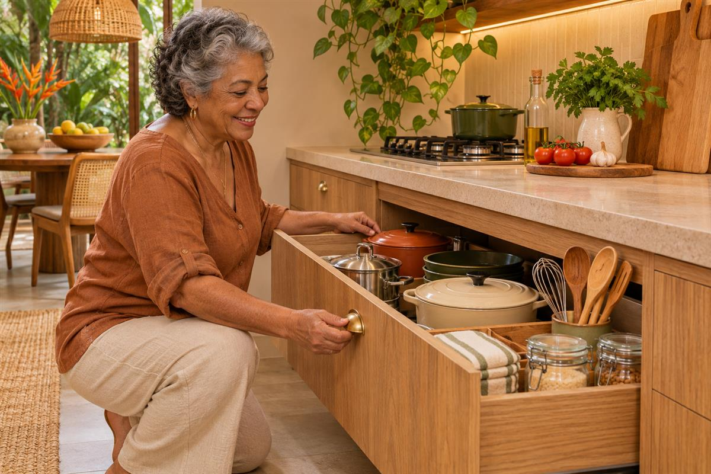

O que significa a estimativa de 28%
O Ministério da Saúde divulga uma estimativa da Organização Mundial da Saúde segundo a qual cerca de 28% das pessoas idosas sofrem ao menos uma queda por ano. Esse dado ajuda a dimensionar o problema de saúde pública. O risco de cada pessoa depende de fatores individuais e ambientais.

Comece pelos caminhos mais usados
Revise os trajetos entre quarto, banheiro, sala e cozinha. Observe fios, tapetes que se movem, objetos no chão e móveis que avançam sobre a passagem. Confira também como esses caminhos ficam à noite e onde a luz pode ser acionada.
Organize a cozinha em torno da rotina
Identifique os utensílios mais usados e escolha posições de armazenamento que permitam alcançá-los confortavelmente. Ao avaliar um armário, veja como as gavetas abrem e se a pessoa consegue se aproximar sem perder espaço para circular.
Móveis planejados para a idade prata
Uma casa que deixa o essencial ao alcance
Na Plenus, planejamos armários e gavetas em torno dos seus hábitos e das medidas do seu ambiente. Podemos posicionar os utensílios mais usados em uma altura confortável e especificar gavetas de abertura ampla, puxadores fáceis de segurar e ferragens com fechamento suave.
Conte quais itens são difíceis de alcançar hoje. A partir disso, podemos planejar um armário que facilite guardar, encontrar e usar o que você precisa no dia a dia, com cores e acabamentos escolhidos por você.